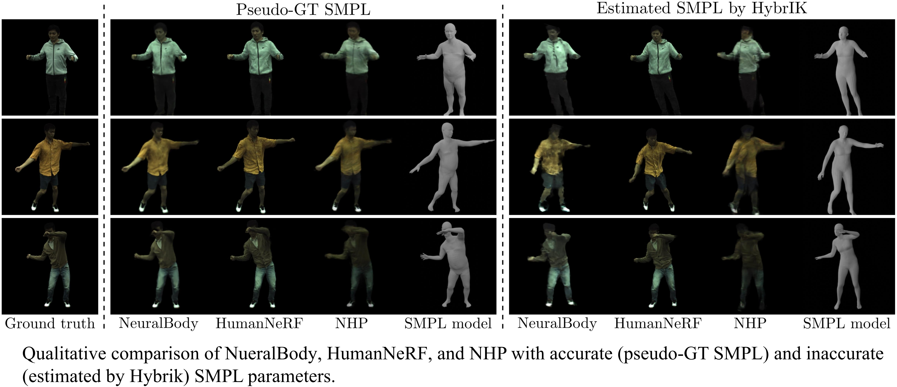

Unifying Settings



The past two years have witnessed a significant increase in interest concerning NeRF-based human body rendering. While this surge has propelled considerable advancements,particularly in terms of dense-view inputs to monocular videos and generalizable and animatable capabilities, it has also led to an influx of methods and datasets. This explosion complicates experimental settings and makes fair comparisons challenging. In this work, we design and execute thorough studies into unified evaluation settings and metrics to establish a fair and reasonable benchmark for human NeRF models. To reveal the effects of extant models, we benchmark them against diverse and hard scenes. Additionally, we construct a cross-subject benchmark pre-trained on large-scale datasets to assess generalizable methods. Finally, we analyze the essential components for animatability and generalizability, and make HumanNeRF from monocular videos generalizable, as the inaugural baseline. We hope these benchmarks and analyses could serve the community.
@inproceedings{liu2023comprehensive,
title={A Comprehensive Benchmark for Neural Human Radiance Fields},
author={Liu, Kenkun and Jin, Derong and Zeng, Ailing and Han, Xiaoguang and Zhang, Lei},
booktitle={Thirty-seventh Conference on Neural Information Processing Systems Datasets and Benchmarks Track},
year={2023}
}